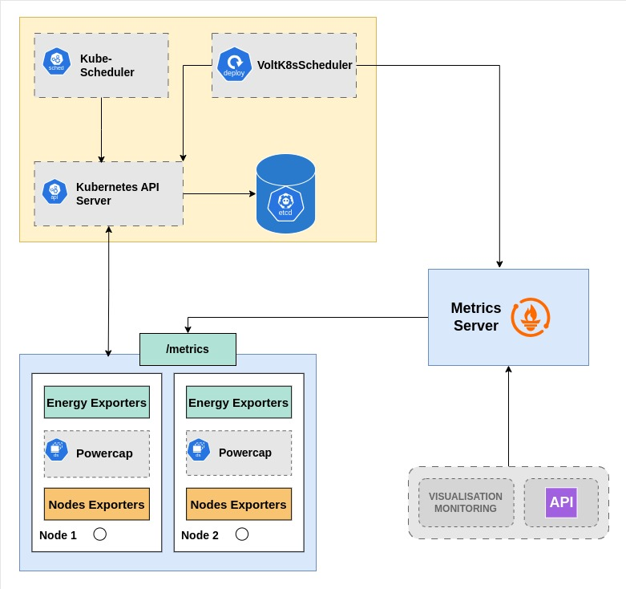
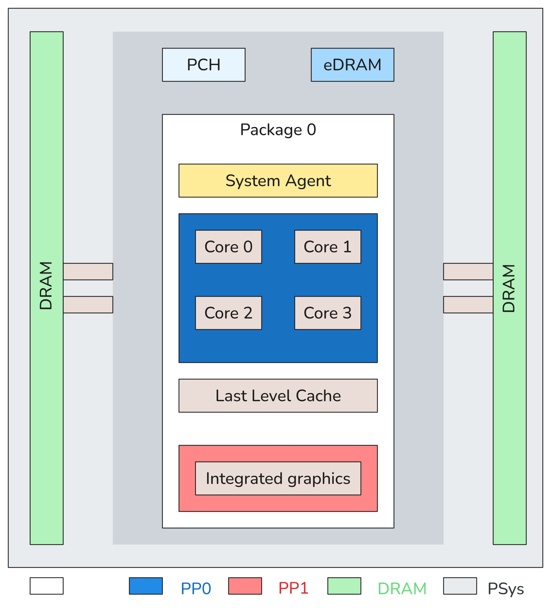
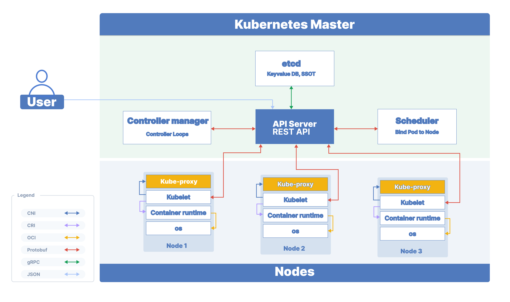
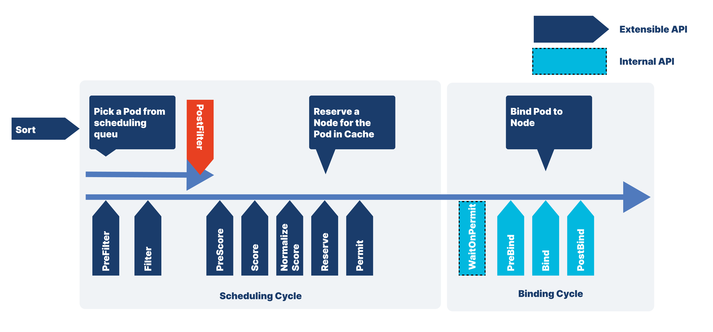
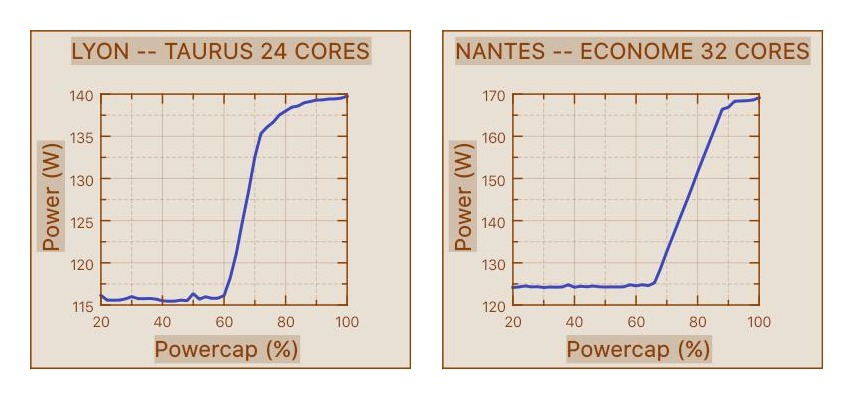
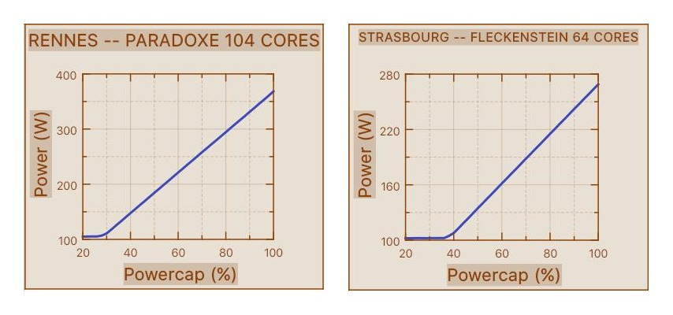
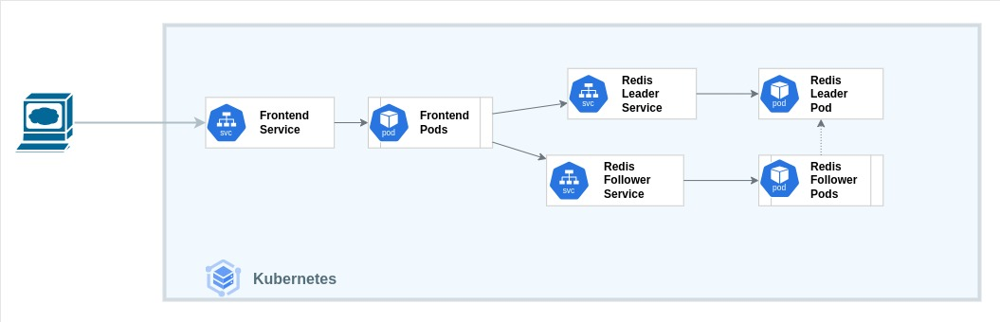
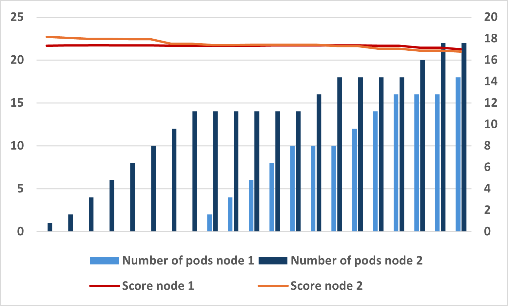
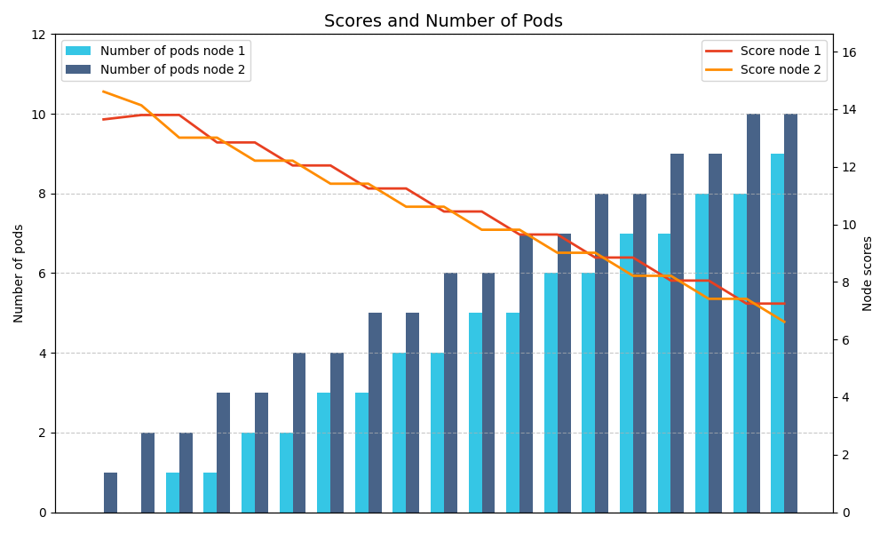

VoltK8sScheduler
Un ordonnanceur Kubernetes pour environnements contraints en énergie
Bonjour à tous. Je suis [Votre Nom] et aujourd'hui, je vais vous présenter VoltK8sScheduler, notre solution pour optimiser l'utilisation de l'énergie dans les clusters Kubernetes, un enjeu crucial pour un avenir numérique durable.
Auteurs
Menra Wedwang Romial (Inria Rennes, Nantes)
Jean-Marc Menaud (IMT Atlantique, Nantes)
Remous-Aris Koutsiamanis (IMT Atlantique, Nantes)
Guillaume Rosinosky (IMT Atlantique, Nantes)
Ce travail est le fruit d'une collaboration entre
Data Centers: Prolifération des serveurs
Croissance rapide du nombre de data centers.
460 TWh (2022) >1000 TWh (2026) La computation seule représente 40% de la consommation totale des data centers.
Objectif des fournisseurs cloud : Limiter la consommation et l'empreinte carbone.
Le secteur numérique est en pleine expansion, et avec lui la consommation des data centers. On parle de 460 TWh en 2022, et les prévisions dépassent les 1000 TWh pour 2026, notamment à cause de l'IA. Le calcul seul, c'est 40% de cette énergie. Un défi majeur pour les fournisseurs de cloud.
Défi: Énergies Renouvelables
Neutralité carbone 2050 : 90% d'électricité renouvelable d'ici 2040 (70% éolien/solaire).
Pour atteindre la neutralité carbone, la transition vers les énergies renouvelables est indispensable : 90% d'ici 2040. Mais ces énergies, comme le solaire ici, sont par nature intermittentes.
Intermittence & Coûts
Intermittence (solaire, éolien).
Variabilité selon l'heure et la météo.
Coûts de l'électricité : Heures creuses/pleines, prix parfois négatifs.
Cette intermittence (soleil, vent) complique l'approvisionnement constant. Ajoutons à cela la volatilité des coûts de l'électricité, avec des heures pleines très chères et parfois même des prix négatifs. Il faut donc s'adapter.
Notre Solution: Double Approche
1 2
Limitation dynamique de la puissance des serveurs en fonction de l'énergie disponible à la source.Mécanisme d'ordonnancement qui intègre explicitement la dimension énergétique pour le déploiement des workloads.
Face à ces défis, nous proposons une solution en deux temps : d'abord, limiter dynamiquement la puissance des serveurs selon l'énergie disponible. Ensuite, un ordonnanceur intelligent qui intègre cette dimension énergétique.
K8s & Énergie: Le Manque
Ordonnanceur K8s: prend des decisions en se bassant sur les ressources CPU/RAM. Ignore l'énergie, nécessaire en environnement contraint.
Kubernetes, l'outil standard d'orchestration, se base sur CPU/RAM pour placer les applications. L'énergie n'est pas un critère natif, ce qui est problématique dans des contextes où elle est limitée ou coûteuse.
Notre Solution: VoltK8sScheduler
Nous proposons VoltK8sScheduler : intègre l'énergie dans le placement.
C'est là qu'intervient VoltK8sScheduler : il enrichit Kubernetes en intégrant l'énergie comme un critère de décision de premier plan pour le placement des charges.
Plan (Organisation de la présentation)
Voici le déroulé de la présentation : après cette introduction, nous verrons l'état de l'art, notre approche détaillée, quelques exemples, nos résultats expérimentaux, et enfin la conclusion.
État de l'Art: Power Capping
Techniques pour limiter la consommation max des serveurs.
Objectifs: efficacité, éviter urgences, réduire coûts OPEX.
Commençons par le Power Capping. C'est l'ensemble des techniques pour limiter la consommation maximale d'un serveur, crucial pour l'efficacité et la réduction des coûts.
État de l'Art: Power Capping
Mécanismes: DVFS, RAPL (Intel), Intel Node Manager, Power Gating, Thread Packing...
Beaucoup ne sont pas adaptés à notre cas :
N'intègrent pas la puissance de la source .
Non conçus pour Kubernetes.
De nombreux mécanismes existent : DVFS, RAPL d'Intel que nous utilisons, Node Manager... Cependant, la plupart ne tiennent pas compte de l'énergie réellement disponible à la *source* et ne sont pas pensés pour l'écosystème Kubernetes.
État de l'Art: Schedulers K8s Éco-Conscients
Plusieurs travaux visent à optimiser l'énergie dans K8s.
Concernant les ordonnanceurs Kubernetes, plusieurs travaux ont cherché à les rendre "éco-conscients", pour mieux gérer l'énergie.
État de l'Art: Schedulers K8s Éco-Conscients
Exemples : Kaur et al. (interférences), Vishal et al. (edge), Philipp et al. (prédiction via GNN), Tayebeh et al. (Caspian, carbone), John & Javad (RLKube).
Ces solutions sont intéressantes, mais...
On peut citer des solutions comme Caspian pour le carbone, RLKube basé sur l'IA, ou des approches utilisant des GNN pour prédire la consommation. Ces solutions sont pertinentes...
État de l'Art: Leurs Limites / Notre Niche
L'énergie n'est pas le critère principal de décision.
Focus sur optimisation ressources ou allocation, pas directement sur contrainte énergétique forte.
Notre besoin: Placer charges en fonction de l'énergie disponible et limitée .
...mais, l'énergie n'est pas le *critère principal* de décision. Elles optimisent les ressources ou l'allocation, alors que notre besoin est de placer les charges en fonction d'une énergie *disponible et strictement limitée*. C'est notre niche.
Approche Proposée: Architecture
Vue d'ensemble de notre solution VoltK8sScheduler.

Afficher l'architecture détaillée
(Figure 2: VoltK8sScheduler architecture - Interaction des composants)
(Default Scheduler, VoltK8sScheduler, API Server, Metrics, Powercap...)
Passons à notre approche. Voici l'architecture globale de VoltK8sScheduler. [Cliquer pour afficher l'image]. On y voit notre scheduler personnalisé, l'agent Powercap, les outils de monitoring et leur interaction avec l'API Kubernetes.
Composants Clés
Powercap Agent Limite puissance nœuds (RAPL).
Monitoring (Prometheus, Kepler) pour collecter et agréger les métriques
🤖
VoltK8sScheduler Plugin K8s, décisions.
Les trois piliers : l'agent Powercap qui applique les limites de puissance via RAPL sur chaque nœud. Le monitoring avec Prometheus et Kepler pour la collecte des données. Et VoltK8sScheduler lui-même, notre plugin qui prend les décisions.
Zoom: Power Capping avec RAPL
RAPL: Running Average Power Limit (Intel).
Mesure et limite la consommation de domaines du processeur.

Afficher les domaines de puissance RAPL
(Figure 3: Domaines de puissance RAPL)
(PKG, PPO, PP1, DRAM, PSys)
Un focus sur RAPL d'Intel. Il permet de mesurer et limiter la consommation de différentes parties du processeur, comme le package global, les cœurs, la RAM. [Cliquer pour afficher l'image].
RAPL: Fenêtres Temporelles
PL1 (Long-Term) : Régule la consommation moyenne (TDP).PL2 (Short-Term) : Permet pics de consommation brefs.Peak Power : Limite absolue instantanée.
RAPL fonctionne avec des fenêtres temporelles : PL1 pour la moyenne à long terme (le TDP), PL2 pour des pics courts, et une limite absolue. Cela offre une granularité fine.
Algo Power Capping (1/2)
Algorithm 1: Power Capping
Input: current_domain, Pmin, sleep_time, get_source_power
1 Function Init(domains):
2 Pmax_ref = 0;
3 foreach domain_path in domains do
4 Pmax_ref = max(Pmax_ref, readMaxPower(domain_path));
5 return Pmax_ref; // Pmax de l'article (TDP)
Initialisation: trouve Pmax de référence (TDP).
Notre algorithme de power capping commence par une initialisation où il récupère la puissance maximale de référence du nœud, le TDP.
Algo Power Capping (2/2)
7 while True do
8 Ps = get_source_power(); // Puissance source
9 Power_to_apply = Pmin;
10 if Ps > Pmax_ref then
11 Power_to_apply = Pmax_ref;
12 else if Ps > Pmin then
13 Power_to_apply = Ps;
14 foreach domain_path in current_domain do
15 current_domain[domain_path] = Power_to_apply;
16 sleep(sleep_time);
Boucle: ajuste limite conso. nœud selon Ps et Pmin/Pmax.
Ensuite, dans une boucle, il récupère la puissance disponible à la source (Ps). Il applique alors une limite au nœud qui est soit Ps (si entre Pmin et Pmax_ref), soit Pmin, soit Pmax_ref. L'objectif est d'adapter la conso du serveur à l'énergie réellement disponible.
Zoom: Le Scheduler Kubernetes
Rappel: Architecture K8s (Maître-Esclave).

Afficher l'architecture Kubernetes
(Figure 4: Architecture Kubernetes)
Un bref rappel sur Kubernetes. [Cliquer pour afficher l'image]. Son scheduler est au cœur du placement des applications.
Framework de Scheduling K8s
Expose points d'extension (phases) pour plugins.

Afficher le framework de scheduling
(Figure 5: Framework de Scheduling)
Nous utilisons: PreFilter, Filter, Score, NormalizeScore, Reserve.
Heureusement, Kubernetes offre un framework de scheduling extensible. [Cliquer pour afficher l'image]. Il expose des points d'extension, des phases, où l'on peut injecter notre propre logique via des plugins. Nous utilisons notamment PreFilter, Filter, Score, NormalizeScore et Reserve.
VoltK8sScheduler: Logique
🤖
Notre ordonnanceur se basse uniquement sur l'énergie pour prendre une décision.
Objectif : placer pods sur nœuds avec assez d'énergie disponible.
La logique de VoltK8sScheduler est simple : elle se base *uniquement* sur l'énergie disponible pour prendre ses décisions. L'objectif est de placer les pods sur les nœuds ayant suffisamment de marge énergétique.
Phase 1: PreFilter
Première phase, PreFilter : on collecte toutes les informations. La puissance requise par le pod (définie par l'utilisateur ou estimée d'après son historique). Et pour chaque nœud, sa Pmax (issue du capping) et sa consommation actuelle (Pac).
Phase 2: Filter
Élimine nœuds non viables.
Nœud viable si : (Pmax - Pac - allocatedPower) >= podPower
Deuxième phase, Filter : on élimine les nœuds qui ne peuvent pas accueillir le pod. Un nœud est viable si sa puissance disponible (Pmax moins Pac moins ce qui est déjà alloué temporairement) est supérieure à la puissance requise par le pod.
Phase 3: Score
Attribue un score aux nœuds filtrés.
Score = Pmax - Pac - podPower - allocatedPower
Troisième phase, Score : pour les nœuds restants, on leur attribue un score. Plus la puissance restante après placement du pod est élevée, meilleur est le score. On privilégie donc les nœuds avec le plus de marge.
Phases 4 & 5
NormalizeScore : Normalise les scores (0-MaxNodeScore).Reserve : Réserve temporairement podPower. Compense le délai de scrapping des métriques.
Objectif : "Simuler" l'utilisation d'énergie du pod avant son assignation réelle pour éviter la sur-allocation.
Les outils de monitoring (Prometheus, Kepler) collectent les métriques avec un délai .
Si plusieurs pods sont schedulés rapidement, la consommation actuelle n'est pas à jour.
Lorsqu'un nœud est choisi, on "réserve" la puissance estimée sur ce nœud.
Cette puissance réservée (allocatedPower dans l'algorithme de Filter) est prise en compte pour les décisions de scheduling suivantes.
Si le scheduling échoue plus tard, la puissance réservée est libérée (Unreserve).
VoltK8sScheduler: Démo
🤖
NodeA
Pmax: 100W
Pac: 30W
Dispo: 70W NodeB
Pmax: 120W
Pac: 40W
Dispo: 80W File:
Pod1 (20W)
Pod2 (15W u, 30W h)
alloc: {"A":0, "B":0}. MaxScore: 100.
Illustrons cela avec un exemple simple. Deux nœuds, A et B, avec des capacités et consommations différentes. Deux pods en attente, P1 (20W) et P2 (qui a un historique à 30W plus élevé que sa demande utilisateur de 15W).
Pod1: PreFilter 🤖
P1
A70W
B80W
P1: user 20W. podPower = 20W.
Pod1: Filter 🤖
P1 (20W)
A (70W) ✔️
B (80W) ✔️
A et B viables pour P1 (20W).
Pod1: Normalize & Assign B (100) > A (~83). P1 → B.
Pod1: Reserve B réserve 20W. alloc: {"A":0, "B":20}.
Pod2: PreFilter 🤖
P2
A70W
B60W
P2: hist. 30W. podPower = 30W.
Pod2: Filter 🤖
P2 (30W)
A (70W) ✔️
B (60W) ✔️
A et B viables pour P2 (30W).
Pod2: Normalize & Assign A (100) > B (75). P2 → A.
Pod2: Reserve & État Final A réserve 30W. alloc: {"A":30, "B":20}.
Analyse Expérimentale: Configuration
Passons aux expériences. Nous avons testé le power capping sur Grid5000, avec différents serveurs pour couvrir les versions 1 et 2 de RAPL. Et VoltK8sScheduler sur un cluster local de 3 mini-PCs. (Environ 25 sec)
Résultats Power Capping (Grid5000)
Comportement capping selon version RAPL.

Afficher RAPL v1
(Figures 6 & 7: RAPL v1)

Afficher RAPL v2
(Figures 8 & 9: RAPL v2)
RAPL v1: Chute rapide conso. v2: Baisse linéaire.
Concernant le power capping : [Cliquer pour RAPL v1, puis RAPL v2]. On observe que RAPL v1 montre une chute de consommation plus abrupte autour de 60-70% du powercap, tandis que RAPL v2 offre une décroissance plus linéaire. Mais dans les deux cas, le capping est efficace.
Distribution Pods: Nœuds Différenciés
Scénario : Node1 Pmax = 90% de Node2 Pmax.
Pour tester VoltK8sScheduler, nous avons simulé des nœuds avec des capacités énergétiques différentes : Node1 a une Pmax de 90% par rapport à Node2.
Cas 1: Application web (guestbook)

Afficher l'achitecture de l'application
(Figure 10: Web App, Guestbook)

Courbe de distribution des pods
(Figure 11: Web App, Nœuds différenciés)
Plus de pods sur Node2 pour compenser l'écart entre les deux nœuds.
Premier cas, une application web légère. [Cliquer pour l'architecture, puis pour la courbe]. On voit que le scheduler place logiquement plus de pods sur Node2, celui avec plus de capacité, pour compenser l'écart.
Cas 2: Stress-ng (gourmand)

Moins de pods sur Node2 suffisent.
Deuxième cas, avec Stress-ng, une charge très gourmande en énergie. [Montrer la courbe]. Ici, moins de pods sur Node2 suffisent pour équilibrer la charge, car chaque pod consomme beaucoup plus.
Synthèse Expérimentale
Power capping efficace pour respecter limites.
VoltK8sScheduler favorise nœuds avec énergie résiduelle.
Décisions cohérentes avec algorithmes.
En synthèse, nos expériences montrent que le power capping est efficace. VoltK8sScheduler favorise bien les nœuds avec plus d'énergie résiduelle, et ses décisions sont cohérentes avec sa logique interne.
Conclusion
VoltK8sScheduler: ordonnanceur K8s tenant compte énergie.
Agent power capping + scheduler avec Prometheus/Kepler.
Combinaison power capping + VoltK8sScheduler = Maintien de la consommation dans les limites tout en assurant le déploiement sur des nœuds ayant assez d'énergie.
Pour conclure, nous avons présenté VoltK8sScheduler, un ordonnanceur Kubernetes qui intègre la dimension énergétique. Combiné à notre agent de power capping et au monitoring via Prometheus/Kepler, il permet de maintenir la consommation dans les limites fixées tout en assurant le déploiement des applications sur les nœuds les plus aptes.
Limitations
Notre solution a des limitations : elle est pour l'instant spécifique à Intel/RAPL, ne fonctionne pas sur VM (où tournent beaucoup de K8s en prod), et l'impact précis sur les perfs applicatives reste à évaluer plus finement.
Travaux Futurs
Pour les perspectives, nous souhaitons étendre la compatibilité aux processeurs AMD et aux VMs, intégrer d'autres mécanismes de capping, et pourquoi pas, prendre en compte l'origine (et donc l'intensité carbone) de l'énergie en temps réel.